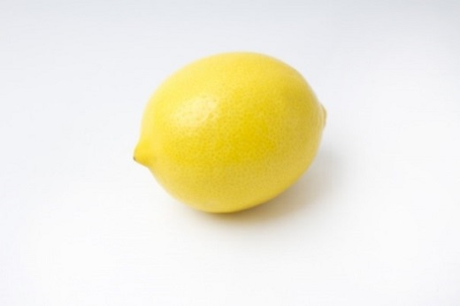

檸檬
梶井基次郎

えたいの知れない不吉な塊が私の心を始終圧えつけていた。焦躁
と言おうか、嫌悪と言おうか――酒を飲んだあとに宿酔があるよう
に、酒を毎日飲んでいると宿酔に相当した時期がやって来る。それ
が来たのだ。これはちょっといけなかった。結果した肺尖カタルや
神経衰弱がいけないのではない。また背を焼くような借金などがい
けないのではない。いけないのはその不吉な塊だ。以前私を喜ばせ
たどんな美しい音楽も、どんな美しい詩の一節も辛抱がならなくな
った。蓄音器を聴かせてもらいにわざわざ出かけて行っても、最初
の二三小節で不意に立ち上がってしまいたくなる。何かが私を居堪
らずさせるのだ。それで始終私は街から街を浮浪し続けていた。
何故だかその頃私は見すぼらしくて美しいものに強くひきつけら
れたのを覚えている。風景にしても壊れかかった街だとか、その街
にしてもよそよそしい表通りよりもどこか親しみのある、汚い洗濯
物が干してあったりがらくたが転がしてあったりむさくるしい部屋
が覗いていたりする裏通りが好きであった。雨や風が蝕んでやがて
土に帰ってしまう、と言ったような趣きのある街で、土塀が崩れて
いたり家並が傾きかかっていたり――勢いのいいのは植物だけで、
時とするとびっくりさせるような向日葵があったりカンナが咲いて
時どき私はそんな路を歩きながら、ふと、そこが京都ではなくて
京都から何百里も離れた仙台とか長崎とか――そのような市へ今自
分が来ているのだ――という錯覚を起こそうと努める。私は、でき
ることなら京都から逃げ出して誰一人知らないような市へ行ってし
まいたかった。第一に安静。がらんとした旅館の一室。清浄な蒲団
。匂いのいい蚊帳と糊のよくきいた浴衣。そこで一月ほど何も思わ
ず横になりたい。希わくはここがいつの間にかその市になっている
のだったら。――錯覚がようやく成功しはじめると私はそれからそ
れへ想像の絵具を塗りつけてゆく。なんのことはない、私の錯覚と
壊れかかった街との二重写しである。そして私はその中に現実の私
私はまたあの花火というやつが好きになった。花火そのものは第
二段として、あの安っぽい絵具で赤や紫や黄や青や、さまざまの縞
模様を持った花火の束、中山寺の星下り、花合戦、枯れすすき。そ
れから鼠花火というのは一つずつ輪になっていて箱に詰めてある。
それからまた、びいどろという色硝子で鯛や花を打ち出してある
おはじきが好きになったし、南京玉が好きになった。またそれを嘗
めてみるのが私にとってなんともいえない享楽だったのだ。あのび
いどろの味ほど幽かな涼しい味があるものか。私は幼い時よくそれ
を口に入れては父母に叱られたものだが、その幼時のあまい記憶が
大きくなって落ち魄れた私に蘇えってくる故だろうか、まったくあ
の味には幽かな爽やかななんとなく詩美と言ったような味覚が漂っ
察しはつくだろうが私にはまるで金がなかった。とは言えそんな
ものを見て少しでも心の動きかけた時の私自身を慰めるためには贅
沢ということが必要であった。二銭や三銭のもの――と言って贅沢
なもの。美しいもの――と言って無気力な私の触角にむしろ媚びて
来るもの。――そう言ったものが自然私を慰めるのだ。
生活がまだ蝕まれていなかった以前私の好きであった所は、たと
えば丸善であった。赤や黄のオードコロンやオードキニン。洒落た
切子細工や典雅なロココ趣味の浮模様を持った琥珀色や翡翠色の香
水壜。煙管、小刀、石鹸、煙草。私はそんなものを見るのに小一時
間も費すことがあった。そして結局一等いい鉛筆を一本買うくらい
の贅沢をするのだった。しかしここももうその頃の私にとっては重
くるしい場所に過ぎなかった。書籍、学生、勘定台、これらはみな
ある朝――その頃私は甲の友達から乙の友達へというふうに友達
の下宿を転々として暮らしていたのだが――友達が学校へ出てしま
ったあとの空虚な空気のなかにぽつねんと一人取り残された。私は
またそこから彷徨い出なければならなかった。何かが私を追いたて
る。そして街から街へ、先に言ったような裏通りを歩いたり、駄菓
子屋の前で立ち留まったり、乾物屋の乾蝦や棒鱈や湯葉を眺めたり
、とうとう私は二条の方へ寺町を下り、そこの果物屋で足を留めた
。ここでちょっとその果物屋を紹介したいのだが、その果物屋は私
の知っていた範囲で最も好きな店であった。そこは決して立派な店
ではなかったのだが、果物屋固有の美しさが最も露骨に感ぜられた
。果物はかなり勾配の急な台の上に並べてあって、その台というの
も古びた黒い漆塗りの板だったように思える。何か華やかな美しい
音楽の快速調の流れが、見る人を石に化したというゴルゴンの鬼面
――的なものを差しつけられて、あんな色彩やあんなヴォリウムに
凝り固まったというふうに果物は並んでいる。青物もやはり奥へゆ
けばゆくほど堆高く積まれている。――実際あそこの人参葉の美し
さなどは素晴しかった。それから水に漬けてある豆だとか慈姑だと
またそこの家の美しいのは夜だった。寺町通はいったいに賑かな
通りで――と言って感じは東京や大阪よりはずっと澄んでいるが―
―飾窓の光がおびただしく街路へ流れ出ている。それがどうしたわ
けかその店頭の周囲だけが妙に暗いのだ。もともと片方は暗い二条
通に接している街角になっているので、暗いのは当然であったが、
その隣家が寺町通にある家にもかかわらず暗かったのが瞭然しない
。しかしその家が暗くなかったら、あんなにも私を誘惑するには至
らなかったと思う。もう一つはその家の打ち出した廂なのだが、そ
の廂が眼深に冠った帽子の廂のように――これは形容というよりも
、「おや、あそこの店は帽子の廂をやけに下げているぞ」と思わせ
るほどなので、廂の上はこれも真暗なのだ。そう周囲が真暗なため
、店頭に点けられた幾つもの電燈が驟雨のように浴びせかける絢爛
は、周囲の何者にも奪われることなく、ほしいままにも美しい眺め
が照らし出されているのだ。裸の電燈が細長い螺旋棒をきりきり眼
の中へ刺し込んでくる往来に立って、また近所にある鎰屋の二階の
硝子窓をすかして眺めたこの果物店の眺めほど、その時どきの私を
その日私はいつになくその店で買物をした。というのはその店に
は珍しい檸檬が出ていたのだ。檸檬などごくありふれている。がそ
の店というのも見すぼらしくはないまでもただあたりまえの八百屋
に過ぎなかったので、それまであまり見かけたことはなかった。い
ったい私はあの檸檬が好きだ。レモンエロウの絵具をチューブから
搾り出して固めたようなあの単純な色も、それからあの丈の詰まっ
た紡錘形の恰好も。――結局私はそれを一つだけ買うことにした。
それからの私はどこへどう歩いたのだろう。私は長い間街を歩いて
いた。始終私の心を圧えつけていた不吉な塊がそれを握った瞬間か
らいくらか弛んで来たとみえて、私は街の上で非常に幸福であった
。あんなに執拗かった憂鬱が、そんなものの一顆で紛らされる――
あるいは不審なことが、逆説的なほんとうであった。それにしても
その檸檬の冷たさはたとえようもなくよかった。その頃私は肺尖
を悪くしていていつも身体に熱が出た。事実友達の誰彼に私の熱を
見せびらかすために手の握り合いなどをしてみるのだが、私の掌が
誰のよりも熱かった。その熱い故だったのだろう、握っている掌か
ら身内に浸み透ってゆくようなその冷たさは快いものだった。
私は何度も何度もその果実を鼻に持っていっては嗅いでみた。そ
れの産地だというカリフォルニヤが想像に上って来る。漢文で習っ
た「売柑者之言」の中に書いてあった「鼻を撲つ」という言葉が断
れぎれに浮かんで来る。そしてふかぶかと胸一杯に匂やかな空気を
吸い込めば、ついぞ胸一杯に呼吸したことのなかった私の身体や顔
には温い血のほとぼりが昇って来てなんだか身内に元気が目覚めて
実際あんな単純な冷覚や触覚や嗅覚や視覚が、ずっと昔からこれ
ばかり探していたのだと言いたくなったほど私にしっくりしたなん
て私は不思議に思える――それがあの頃のことなんだから。
私はもう往来を軽やかな昂奮に弾んで、一種誇りかな気持さえ感
じながら、美的装束をして街を※(「さんずい＋闊」、第4水準2
-79-45)歩した詩人のことなど思い浮かべては歩いていた。
汚れた手拭の上へ載せてみたりマントの上へあてがってみたりして
その重さこそ常づね尋ねあぐんでいたもので、疑いもなくこの重
さはすべての善いものすべての美しいものを重量に換算して来た重
さであるとか、思いあがった諧謔心からそんな馬鹿げたことを考え
どこをどう歩いたのだろう、私が最後に立ったのは丸善の前だっ
た。平常あんなに避けていた丸善がその時の私にはやすやすと入れ
「今日は一つ入ってみてやろう」そして私はずかずか入って行った
しかしどうしたことだろう、私の心を充たしていた幸福な感情は
だんだん逃げていった。香水の壜にも煙管にも私の心はのしかかっ
てはゆかなかった。憂鬱が立て罩めて来る、私は歩き廻った疲労が
出て来たのだと思った。私は画本の棚の前へ行ってみた。画集の重
たいのを取り出すのさえ常に増して力が要るな！ と思った。しか
し私は一冊ずつ抜き出してはみる、そして開けてはみるのだが、克
明にはぐってゆく気持はさらに湧いて来ない。しかも呪われたこと
にはまた次の一冊を引き出して来る。それも同じことだ。それでい
て一度バラバラとやってみなくては気が済まないのだ。それ以上は
堪らなくなってそこへ置いてしまう。以前の位置へ戻すことさえで
きない。私は幾度もそれを繰り返した。とうとうおしまいには日頃
から大好きだったアングルの橙色の重い本までなおいっそうの堪え
がたさのために置いてしまった。――なんという呪われたことだ。
手の筋肉に疲労が残っている。私は憂鬱になってしまって、自分が
以前にはあんなに私をひきつけた画本がどうしたことだろう。一
枚一枚に眼を晒し終わって後、さてあまりに尋常な周囲を見廻すと
きのあの変にそぐわない気持を、私は以前には好んで味わっていた
「あ、そうだそうだ」その時私は袂の中の檸檬を憶い出した。本の
色彩をゴチャゴチャに積みあげて、一度この檸檬で試してみたら。
私にまた先ほどの軽やかな昂奮が帰って来た。私は手当たり次第
に積みあげ、また慌しく潰し、また慌しく築きあげた。新しく引き
抜いてつけ加えたり、取り去ったりした。奇怪な幻想的な城が、そ
やっとそれはでき上がった。そして軽く跳りあがる心を制しなが
ら、その城壁の頂きに恐る恐る檸檬を据えつけた。そしてそれは上
見わたすと、その檸檬の色彩はガチャガチャした色の階調をひっ
そりと紡錘形の身体の中へ吸収してしまって、カーンと冴えかえっ
ていた。私は埃っぽい丸善の中の空気が、その檸檬の周囲だけ変に
緊張しているような気がした。私はしばらくそれを眺めていた。
不意に第二のアイディアが起こった。その奇妙なたくらみはむし
――それをそのままにしておいて私は、なに喰わぬ顔をして外へ
私は変にくすぐったい気持がした。「出て行こうかなあ。そうだ
変にくすぐったい気持が街の上の私を微笑ませた。丸善の棚へ黄
金色に輝く恐ろしい爆弾を仕掛けて来た奇怪な悪漢が私で、もう十
分後にはあの丸善が美術の棚を中心として大爆発をするのだったら
私はこの想像を熱心に追求した。「そうしたらあの気詰まりな丸